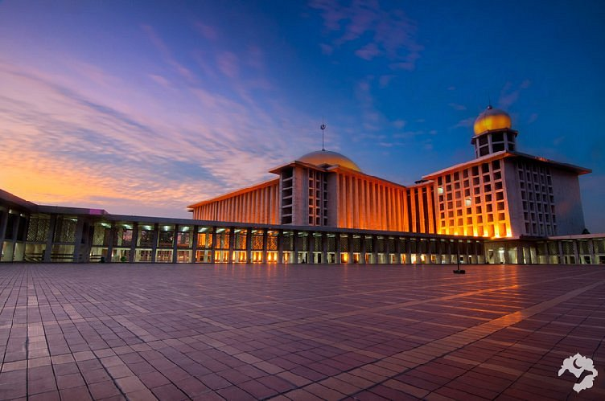

Masjid Istiqlal
Masjid Istiqlal adalah salah satu masjid terbesar dan termegah di Indonesia, terletak di Jakarta. Dibangun pada tahun 1978, masjid ini memiliki desain arsitektur modern dengan sentuhan unsur-unsur khas Indonesia. Bangunannya yang megah terdiri dari kubah besar dan menara yang menjulang tinggi, mencerminkan keindahan seni dan keagungan Islam. Masjid Istiqlal sering menjadi tempat utama perayaan keagamaan dan acara-acara penting di Indonesia, serta menarik minat wisatawan dari berbagai penjuru dunia untuk mengagumi keindahan arsitektur dan keheningan spiritualnya. Dengan kapasitas yang besar, masjid ini mampu menampung ribuan jamaah dalam satu waktu, menjadikannya salah satu landmark agama yang paling menonjol dan penting di Indonesia.